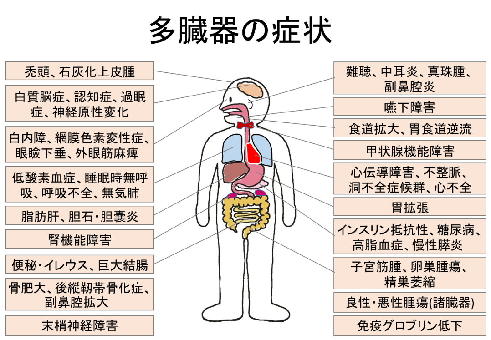

HOME ＞ 一般の方へ ＞ 筋強直性ジストロフィーの多臓器症状
筋強直性ジストロフィーで頻度の高い多臓器症状としては以下のようなものがあります。
２．呼吸障害：低酸素血症、睡眠時無呼吸、日中過眠、呼吸不全、排痰能力低下・無気肺
４．構音・嚥下障害：咀嚼嚥下障害、鼻咽頭閉鎖不全、歯列不整・虫歯
５．代謝障害：耐糖能障害(インスリン抵抗性、糖尿病)、脂質異常症(高脂血症)
６．消化管障害：便秘、巨大結腸・腸閉塞、食道拡張、胃拡張､胃食道逆流等
７．眼症状：白内障、網膜色素変性症、眼瞼下垂・兎眼、眼球運動障害
１２．腎機能障害
１３．腫瘍
１４．骨異常：骨肥大等、頚椎症
１５．末梢神経障害
それぞれの、概要と注意点を記しました。これらの症状は、一人の患者様に全てが見られるわけではありませんが、比較的頻度の高いものです。早めに対処することで、より良い状態を維持できるものも多いのですが、ご本人が症状に気付いていない場合が多いこと、検査をしないと発見できないものが多いことなどのため、病状が進行してからの発見が多い、突然死が多いなどの問題があります。専門医療機関への受診と定期的な検査、生活指導やリハビリテーション、投薬など必要な処置を受けられることをお勧めします。
